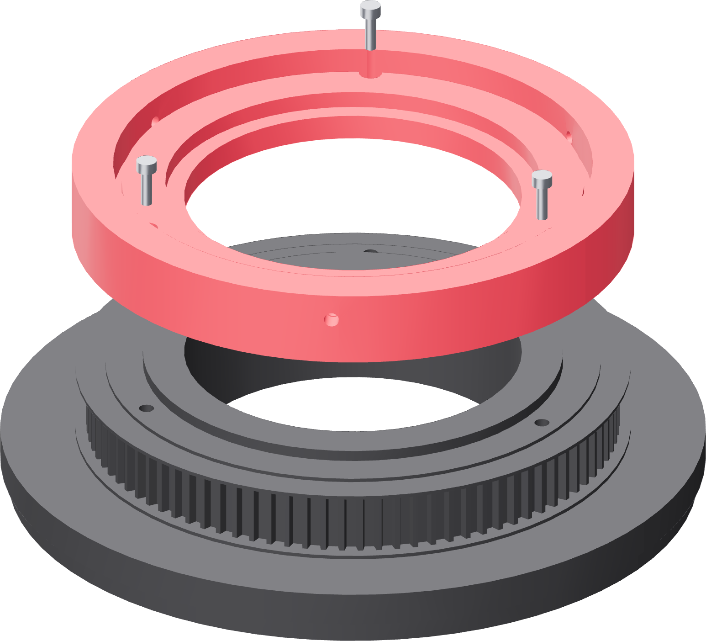

The nest
The only tube-size-specific part in the fixture. A later tube size costs this one 150 mm print and nothing else.

Three surfaces
| ID pilot | Ø123.30 × 4.5 mm — 0.20 mm radial clearance |
| OD guide | Ø127.80 mm — 0.40 mm radial clearance |
| Adjusters | 3 × M3, at 120°, tips on the tube OD |
The ID pilot is shorter than the end cap's 6.35 mm recess, so the same nest takes a bare tube end or an already-welded first end.
- Sit the nest on the turntable's register and turn it until the three access wells line up with the three inserts at 0°, 120° and 240°.
- Drop three M3 × 10 straight down the wells. Use the slim-shank bit or an L-key — a 1/4 inch hex bit body will not enter a Ø6.2 mm well.
- Bring all three down evenly by hand. They engage the inserts by 3.2 mm; do not chase more.
- Check each head is seated in its recess in the nest base.